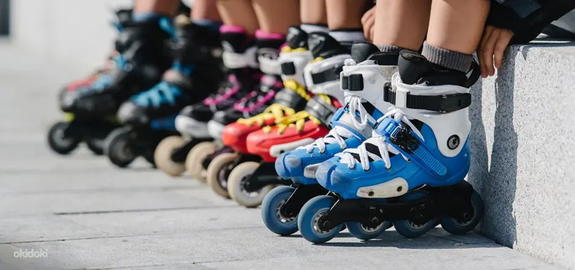

Как подобрать себе роликовые коньки
Содержание:
- Почему важно уделить внимание выбору роликовых коньков?
- Какими бывают роликовые коньки?
- Классификация роликовых коньков в зависимости от стиля катания
- На что обратить внимание при покупке?
- Какие роликовые коньки лучше выбрать для ребенка?
- Советы
Почему важно уделить внимание выбору роликовых коньков?
Спорт и активный отдых на улице должны приносить удовольствие. Если выбрать коньки и дополнительное снаряжение неправильно, вы рискуете получить массу неудобств. Ролики, которые плохо держат ногу, жмут и натирают, или же напротив, сидят слишком свободно, в лучшем случае могут отбить все желание кататься, в худшем - привести к травмам.
Ознакомьтесь с разновидностями роликовых коньков и прочитайте инструкцию по правильному подбору размера.
Какими бывают роликовые коньки?
Модели различаются по своим характеристикам в зависимости от того, для какого стиля они предназначены: фрискейт, слалом, даунхилл, агрессив, спидскейтинг и т.д. Правильный выбор для каждого роллера будет свой. Новичкам лучше остановить свой выбор на универсальных моделях для фитнеса и фрискейта. В классическом 4-колесном исполнении их ходовая часть подходит для спокойного и активного катания. 
| Фитнес | Такие ролики идут в комплекте с мягким ботинком. Для фиксации голеностопа используется специальная манжета - кафф. Мягкие ботинки обеспечивают отличную поддержку для лодыжки. В них удобно выполнять технические повороты. |
| Фрискейт | Комплектуются жесткими ботинками из ударопрочного пластика. Внутри находится мягкий съемный сапожок - лайнер, или внутренник. Он который обеспечивает ногам комфорт и защиту от натирания. Фрискейт-коньки - оптимальный вариант для тех, кто хочет перейти на более сложный уровень катания. Они имеют упрочненную раму и жесткие колеса, которые хорошо катятся как по асфальту, так и по тротуарной плитке. |
| Агрессив | Продвинутым роллерам можно переходить на специализированные коньки с низкими рамами, маленькими колесами и соулплейтом - проставкой, обеспечивающей эффектное скольжение по различным поверхностям. |
| Спидскейтинг | Беговые коньки оснащены длинными рамами и большими колесами, позволяющими развивать высокую скорость. Однако они не подойдут тем, кто пока еще неуверенно стоит на роликах, поскольку низкий ботинок без каффа хуже держит лодыжку. |
| Фристайл-слалом | Коньки для этого стиля имеют легкую короткую раму. Ботинки обычно оснащаются интегрированным лайнером. |
Классификация роликовых коньков в зависимости от стиля катания
Фитнес-ролики. Эти коньки должны быть удобными и легкими, чтобы в них можно было легко преодолевать несколько километров.
Основные характеристики:
- мягкий ботинок;
- колеса среднего размера (от 80 до 90 мм) небольшой жесткости (от 78 до 82 А);
- рама длинная (от 260 до 300 мм) из композитных материалов или алюминия;
- 3-9 подшипников ABEC.
- ботинок жесткий;
- колеса: маленькие (от 55 до 66/72 мм), степень жесткости (от 88 до 100 А);
- рама как правило композитная, с грузом для скольжений в центре.
Основные технические характеристики:
- жесткий низкий ботинок из карбона или композита, с тонким несъемным лайнером;
- большие колеса (от 100 до 125 мм) средней жесткости (от 82 до 90А);
- длинная рама из алюминия или карбона с 3 или 4 колесами;
- подшипники стандартные.
Основные технические характеристики:
- жесткий низкий ботинок с вкладышем;
- длинная рама из алюминия (редко карбона) с 3 или 4 колесами;
- большие колеса (детские 90-110, взрослые 110-125 мм) средней жесткости (85-88 А);
- подшипники стандартные, ABEC от 7 до 9.
На что обратить внимание при покупке?
Размер и тип колес
Чем больше диаметр колеса, тем быстрее едут ролики. Жесткие (84 А и выше) - при прочих равных дают более высокую скорость и дольше служат, но амортизация у них хуже. Мягкие - наоборот. Они обеспечивают хорошую амортизацию и чаще всего лучшее сцепление.
Профиль колес может быть:
- плоским;
- узким;
- широким.
Подшипники (более подробная информация здесь )
Отвечают за движение колес. Во время катания они должны равномерно крутиться без посторонних звуков. Появление гула или стука во время катания может быть вызвано попаданием грязи между подшипниками или ржавчиной на них.
Жесткий или мягкий ботинок?
Жесткие ботинки отлично подходят для фрискейта и длительных поездок по городу. Они хорошо поддерживают ногу и лучше передают усилие. В жестких ботинках легче маневрировать. Кроме того, лайнер в них съемный, поэтому при износе его легко заменить. Мягкие ботинки хороши для непродолжительного неспешного фитнеса, поскольку ногам в них комфортнее. На внутренниках не должны быть грубых неаккуратных швов. Толщина удобного сапожка составляет от 15 мм.
Рама
Изготавливается из алюминия или карбона. Рекомендуется выбирать ролики со съемной рамой, чтобы иметь возможность менять ее при повреждении или апгрейдить коньки.
Размер
Ботинок следует выбирать по длине стопы, ориентируясь на указания конкретного производителя роликов. В большинстве случаев размер коньков и обуви совпадает. Однако иногда встречаются модели, которые рекомендуется брать на размер больше.
Выбор правильного размера иногда вызывает трудности. Важно, чтобы коньки плотно прилегали к вашим ногам, не были слишком тугими или свободными. Кроме того, не забудьте сначала ознакомиться с размерной сеткой интересующего вас бренда: в ней указаны параметры длины и ширины стопы.
Упор носка
Эта характеристика важна для квадов. В таких коньках стоппер используется для выполнения элементов фигурного катания и танцев а также для торможений и разбега.
Штатный тормоз
Данное приспособление крепится к раме коньков. Оно незаменимо для новичков, которые еще не освоили все способы торможения.
Защита
Вместе с роликовыми коньками желательно сразу купить комплект защиты. Он включает в себя:
- шлем;
- наколенники;
- налокотники;
- перчатки.
Какие роликовые коньки лучше выбрать для ребенка?
Все качественные детские ролики регулируются по длине на 2-4 размера. Они служат дольше, и ребенку комфортнее кататься на коньках, к которым он привык.
- Лучше брать модели с раздвижным носком. На них легче держать баланс, тогда как смещение пятки приводит к переносу центра тяжести назад.
- Маленьким детям подойдут ролики на 3 колесах: они легче, чем классические модели.
- У детей еще недостаточно развита координация, поэтому для них рекомендуется брать коньки с жесткими ботинками, которые обеспечивают ногам хорошую поддержку .
Советы
- Потренируйтесь на роллердроме. Если вы не уверены, что вам понравится кататься на коньках, сначала возьмите их напрокат или одолжите у друзей, чтобы попробовать. Так вы сможете без лишних расходов понять, подходит ли вам роллер-спорт. Попробуйте выполнить несколько упражнений на коньках. Лучше всего делать это с опытным инструктором, который сразу покажет правильную технику и исправит ваши ошибки.
- Рассчитайте бюджет. Если вы новичок в роллер-спорте, не берите сразу дорогие коньки. Остановите свой выбор на паре средней ценовой категории. Такие ролики вполне удобны, безопасны и эффективны. На них можно спокойно кататься, оттачивая свое мастерство.
- Определитесь со стилем. Если вы не собираетесь ограничиваться одним направлением, но у вас ограниченный бюджет, выбирайте модель, подходящую для начального катания в нескольких дисциплинах.
- Не снимайте коньки сразу. Примеряя ролики в магазине, не спешите разуваться. Чтобы понять, что размер вам подходит, побудьте в коньках хотя бы 15 минут. При движении пятка должна хорошо фиксироваться. Если размер подобран верно, в положении стоя пальцы ног упираются в носок ботинка, а при согнутых коленях и надавливании на язычок это ощущение исчезает.